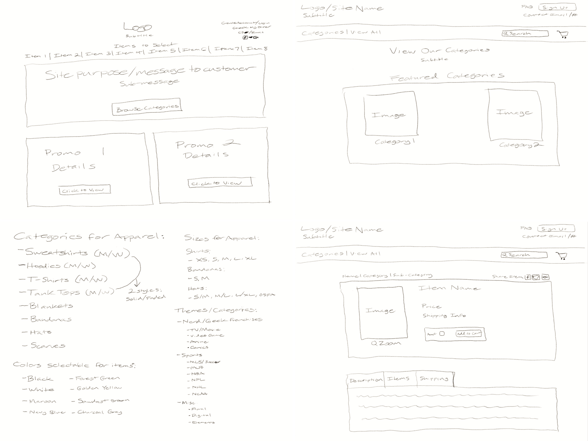
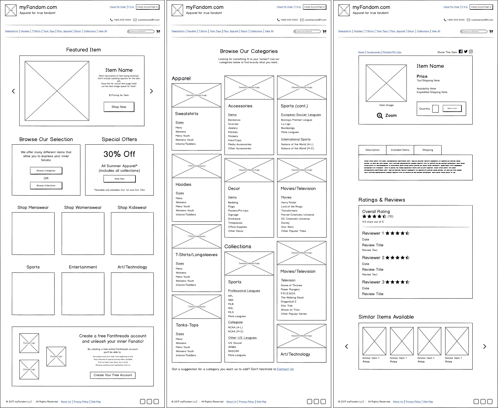

myFandom.com provides you an all-in-one source to shop for, and share your favorite sports and entertainment fandom with everyone.
Take a LookSummary
Nowadays, people enjoy many different forms of entertainment. From sports, to TV and movies, and even art and technology, every individual has a form of entertainment that they call themself a “fan” of and enjoy showing their “fandom” by either wearing it, or showing it off in their home.
But with many sources available that remain dedicated to one form of entertainment, how do you find what you’re looking for without endlessly searching? That’s what I sought to create in the form of a one-stop online shop for fans of all kinds by the name of myFandom.com.
My Role
- Strategy and Brainstorming
- Full-scale Wireframe Design
- Responsive Prototyping and Testing
- User-Testing and Feedback Collection
Tools Utilized
Background Research
Before beginning the design and layout needed for shopping on myFandom.com, I wanted to first get a look into the minds of individuals who will be visiting the page often. This would be set in motion through both surveys and personal interviews consisting of questions centered around three key aspects:
- Their access to, as well as frequency of use of e-Commerce pages as a form of shopping.
- How often they rely on e-Commerce for purchasing items like apparel, wearable accessories and home decor.
- Their enjoyment of different forms of sports and entertainment (including major-league sports, TV/movies, and art/technology).
Each of these aspects would help me to determine not only who will be utilizing the features and options provided from the page, but also how to better cater to each indivdiual form of “fandom” by individuals visting.
Analysis
After analysis of 50 individuals who were surveyed and interviewed, the results proved much more insightful than expected…
- 80% that stated they shop online often, noted they often spend up to $2,000 each year on purchases made online (exceeds national average of $1,819 spent annually*).
- 54% of individuals that enjoy purchasing both apparel and even home decor/accessories prefer doing so online due to added convenience.
- 68% who follow at least one professional sports league (either domestic or international) have difficulties finding merchandise for their teams. Common reasons mentioned were obscurity, or exclusive availability in local area resulting in higher costs.
- 64% mentioned similar circumstances with regards to purchasing merchandise for TV and movie franchises, noting a need for better categorization of specific franchises.
- A staggering 66% indicated they would enjoy making purchases of their favorite forms of fan-based merchandise from a single page. From this group, 70% commented that it would need to feature exclusive items not available elsewhere, as well as clearer indication of costs (plus shipping and taxes) during checkout.
*National annual average of $ spent referred to from international statistics-calculation organization Stastista
Problems
While there do exist specific pages that cater to individual forms of fandom and are centric to offering merchandise for sports, TV/Movies and art, there do exist some key problems present that can hinder a more seamless and enjoyable experience for ordering…
- Consulting individual store pages for different types of items. By visting multiple pages to obtain items, a disorganized shopping experience results, and requires keeping track of which sites have specific items/offers available.
- Inability to locate items you can’t find anywhere else due to exclusivity and not having a way of being notified about availability.
- Managing multiple order numbers due to shopping on individual pages. Different pages allow the option of tracking an order in different ways, thus resulting in difficulty when trying to obtain accurate shipping timeframes.
These are only just a few of other problems that myFandom.com was created to resolve.
Solution
To insure this more convenient option for fan-based shopping online, my greatest focus was to insure a less-clutered, and more organized all-in-one layout to allow users to shop through their favorite teams and franchises they love. This included having a more polished category page available for anyone to browse through, not just specific forms of fandom alone, but by individual items as well to insure they get exactly what they’re looking for from the start.
In addition to organized categorical structure, I wanted to include a more streamlined way of navigating through items displayed side by side with each other. This called for the inclusion of a carousel-style browsing window allowing the option for viewing multiple items in the same window, thereby reducing the need to show items on a long-stretching list.
However, it wasn’t just basic item organization I had in mind. I also wanted to maintain convenience when shopping online, which brought up the idea of an optional account-creation process for users shopping online for the first time. When visiting checkout, you are welcome to either sign up for a free myFandom account to manage your orders, or you can checkout as a guest, but neither choice automatically creates the order on the spot (in comparison to some pages that have that as a final step, but don’t allow you to review order info).
Process
Rough Sketches
Wireframes
Branding
To make sure the look of myFandom.com didn't come off too overpowering, I decided to implement more calmer color tones throughout the page. As most sports apparel often features blue as a primary color, I kept a darker, yet smoky shade of blue as the central color for each piece of text and header bars.
Coupling this darker tone, I balanced out each page with a lighter periwinkle-style blue as the primary backdrop for each page, which allows greater ease on the eyes as you navigate. Contrary to the idea that most online shopping pages feature brighter colors to convey excitement, my idea was to combine this energy with a more tame environment that anyone of any level of fandom can enjoy.
Final Design

Testing and Feedback
After implementing my final design into InVision as a prototype, I conducted tests of the final prototype using by means of Peek User Testing with a group of 25 individuals. Each were tested on how quickly they could navigate through myFandom’s main home page, and create an order using a pre-selected item.
After all 25 individuals were tested, the success rate of navigating through the checkout process in 60 seconds or less, measured out at 76% (19 out of 25). Taking this into account, the average time needed to complete the order and checkout process together totaled 60.48 seconds, which is quite encouraging for gauging the ease of use individuals had moving through each step.
That said, there were some comments that stood out that helped to make changes in order to make sure the process would be easier to move through…
“I like this cleaner layout, but perhaps you should make the arrows bigger for browsing through items. They’re kinda small to use if I want to move to the next item in the list (referring to the carousel feature). Aside from that, I definitely like that I don’t have to go to other pages for certain options, and have them right there. Good work.”
- Ann Thean (Portland, OR)
“Wish most shopping pages were this easy, that’s for sure. Kinda wish some other items could be displayed to show the range of products for the site, but since it’s just a test, it’s understandable. Just would be nice to have, is all.”
- Jason Lambert (Seattle, WA)
With these and other comments, I quickly made alterations to insure each page had a more improved experience for individuals anytime they visit the site.
Conclusion
As I look back on the creation of myFandom.com, this page pushed me into territory I was already familiar with in some ways. But instead of letting the page simply be filled with a mess of images for items and overloading the page with color at every turn, I was able to learn how to design a page that provides a unique and cleaner layout that caters to an industry I have a passion for.
I’m happy with how this final design of turned out and it’s designs like these that continue to remind me every day that simplicity is key.